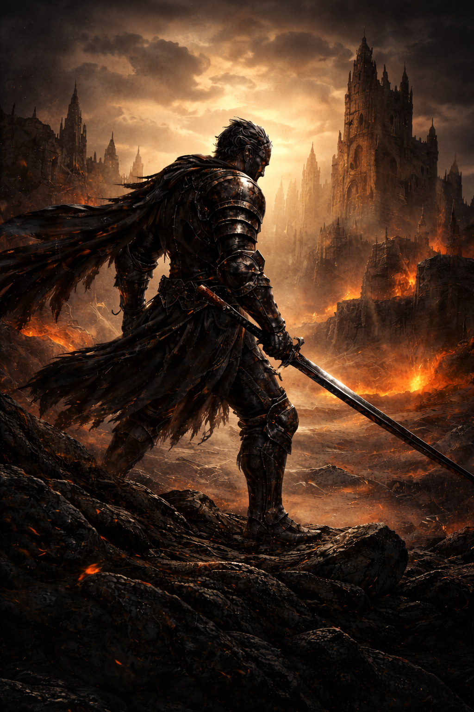
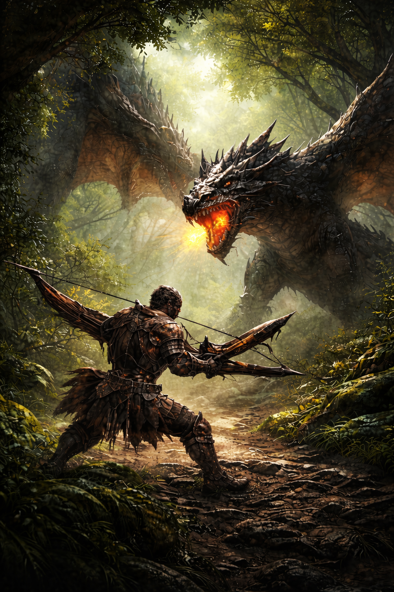

Mes Passions
| Accueil | Productions scolaires | Mes passions | Mes vidéos | Mon site de rêve |
|---|

Dans ces jeux, j'apprécie leurs diffcultés. C'est plaisant de pouvoir se concentrer plusieurs heures sur un bon jeu et découvrir les patern de chaque boss. Avec de l'entraînement, il est possible de développer des techniques nouvelles et de s'ameliorer rapidement
J’aime Monster Hunter pour son univers naturel. La faune et la flore donnent l’impression d’un monde vivant, et pas seulement d’un terrain de combat.